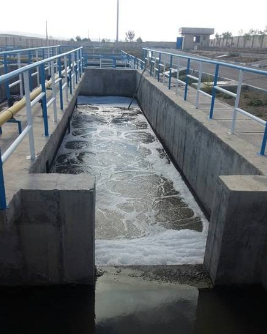

.png)
- مطالعات مرحله اول و دوم طرح فاضلاب شهر تایباد و زرین آباد (شامل شبکه خط انتقال و تصفیه خانه)
- مطالعات مرحله اول و دوم طرح فاضلاب شهر محمود آباد (شامل تهیه ی اسناد BOT)
- مطالعات مرحله اول فاضلاب شهر خوسف
- مطالعات مرحله اول طرح فاضلاب شهر شال (استان قزوین)
برخی از مطالعات انجام شده در مورد فاضلاب
همچنين برای طراحي شبکه و خط انتقال فاضلاب نرم افزار های مورد استفاده به ترتیب زیر است
نرم افزار های مطالعاتی خطوط شبکه فاضلاب
SewerCAD
اين برنامه يكي از قوي ترين برنامه هاي آناليز و طراحي شبكه هاي ثقلي يا تحت فشار جمع آوري فاضلاب ميباشد. اين برنامه با دارا بودن محيطي گرافيكي انواع المانهاي موجود در شبكه جمع آوري فاضلاب را مدل كرده و به انواع روشهاي موجود به تحليل و طراحي شبكه مي پردازد. SewerCAD به سهولت با برنامه هاي تصويري ، توصيفي و بانك هاي اطلاعاتي ارتباط برقرار مینمايد و طراح را از خطا در ورود اطلاعات دور نگه مي دارد.- برخي از قابليتهاي مهم اين برنامه عبارتند از:
- ورود ساده شبكه جمع آوري فاضلاب
- جداول متعدد جهت ورود و خروج اطلاعات
- طراحي و ترسيم پروفيل به روشهاي دلخواه
StormCAD
برنامه StormCAD يكي از قوي ترين برنامه هاي آناليز و طراحي شبكه هاي آب سطحي مي باشد كه در محيطAutoCAD هم قابل اجرا مي باشد. اين برنامه بسادگي قابليت تبادل اطلاعات با برنامه هاي MicroStation ، ArcView و همچنين انواع بانكهاي اطلاعاتي را دارد. برنامه StormCAD مي تواند علاوه بر لوله ، باكس و بقيه مقاطع مورد استفاده در شبكه هاي جمع آوري آب سطحی را مدل كرده و با گرفتن اطلاعات بارش به طراحي و يا تحليل شبكه آب سطحي بپردازد. برنامه مذكور انواع حالتهاي جريان همچون جريانات تحت فشار ، پرش هيدروليكي ، پس زدن آب و منحنيهاي سطح آب را مي تواند محاسبه نمايد. قابليتهاي متعدد اين برنامه طراح را از خطاهاي متعدد ناشي از ورود اطلاعات اشتباه، رها نموده و با آناليز و طراحي سريع، طراح را در بهينه نمودن شبكه كمك مي كند.-
برخی از قابلیتهای متعدد این برنامه عبارتند از:
- ترسيم ساده شبكه
- سهولت در ويرايش اطلاعات ورودي
- جداول متعدد به سبك دلخواه
